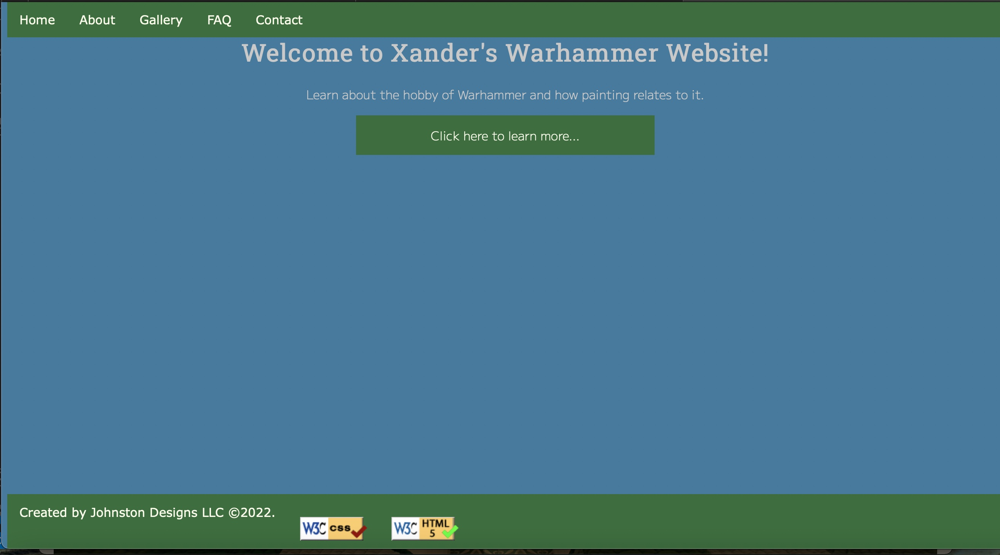

Review 1:Will Nguyen
Will Nguyen
- it is hard to read what is written under the logo
- Files are managed well, with all files being in the project folder.
- No validation buttons included, but I do not think they are needed for this project as the website is being
made for a client.
- On the Gallery page, most of the pictures are the same size.
- Styling and themes are consistent throughout the website.
- Rev.
- Constrast: Contrast is very good. Text and backgroud colors go well together and make
things easy to read.
- Repetition: Repetition is good. Themes and styes and easy to recognize between pages.
- Alignment: Alignment is consistent between pages and is done in a way that looks good.
- Proximity: Things on the pages are spaced consistently and a good distance from each
other that makes the pages seem full but not overly crowded.
- All page are designed well and consistently, with good content on each.
- Keep up the good work!
Review 2: Ronnie Johnston

Ronnie Johnston
- the site has no logo maybe your client do not have one
- the home page is too plain and when I click on click button it skips about and gallary then takes me to FAQ
- On the Gallery page, most of the pictures are not well known or faded when clicked on it
- Styling and themes are consistent throughout the website.
- Rev.
- Constrast: Contrast is good. Text and backgroud colors are ok and it might be hard for some poeple to read.
- Repetition: Repetition is good. Themes and styes and easy to recognize between pages.
- Alignment: Alignment is consistent between pages and is done in a way that looks good.
- Proximity: Not a lot of things on this website or really impress their ordience
- All page are designed well and consistently.
- Good Work!